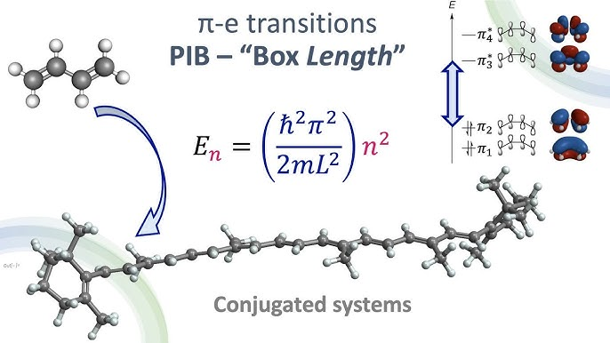
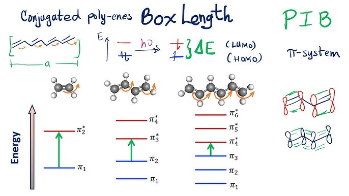

Applications of Particle in a Box Model#
What you need to know
The particle in a box (PIB) model is a simplified quantum mechanical system that can be applied to explain electronic transitions in conjugated molecules, such as those with alternating single and double bonds.
In these systems, the π-electrons are delocalized and can be approximated as particles confined to a “box” formed by the length of the conjugated region.
Applications in π-Conjugated Systems#

1D Particle in a Box: Often used for linear conjugated systems like butadiene or polyenes. The box length corresponds to the length of the conjugated chain, and the energy levels are used to predict electronic transitions that occur when light is absorbed.

2D Particle in a Box: For more complex systems like aromatic rings (e.g., benzene) or graphene fragments, the 2D PIB model helps to describe the movement of π-electrons confined to two dimensions.
Example: 1D PIB Applied to Butadiene#
Consider the 1D PIB model applied to butadiene (C₄H₆), where the four π-electrons are delocalized over the entire conjugated region. The length of the box corresponds to the length of the conjugated chain, approximately 5 Å (Angstroms).
Energy Levels#
The energy levels of a particle in a 1D box are given by the equation:
Where:
\(n\) is the quantum number (1, 2, 3, …)
\(h\) is Planck’s constant
\(m\) is the electron mass
\(L\) is the length of the box (5 Å for butadiene)
Transition Energy#
The transition between energy levels corresponds to the absorption of a photon, where the energy difference is:
This energy can be related to the wavelength of absorbed light using:
where \(\lambda\) is the wavelength and \(c\) is the speed of light.
Example Problems#
Problem 1: A conjugated diene molecule (e.g., butadiene) has a total conjugation length of 5 Å, approximated by the distance between the end carbons in the conjugated chain. Using the 1D particle in a box model, calculate the wavelength of light absorbed when a π-electron is excited from the ground state (\(n = 1\)) to the first excited state (\(n = 2\)). Assume the electron behaves as a particle of mass \(m = 9.109 \times 10^{-31} \, \text{kg}\) and Planck’s constant is \(h = 6.626 \times 10^{-34} \, \text{J s}\).
Problem 2: Consider a polyene chain of 6 alternating single and double bonds, where each C=C bond length is approximately 1.35 Å and each C–C bond length is approximately 1.45 Å. Calculate the total conjugation length of the polyene molecule and the wavelength of light required to excite a π-electron from the \(n = 1\) to \(n = 2\) state using the 1D particle in a box model.
Problem 3: A linear conjugated molecule has 8 alternating single and double carbon-carbon bonds. The bond lengths are given as 1.40 Å for single bonds and 1.35 Å for double bonds. Use the particle in a box model to calculate the wavelength of light absorbed during a transition from the \(n = 1\) state to the \(n = 3\) state.
Problem 4: A conjugated triene molecule has a total conjugation length of 7.5 Å, derived from three alternating single and double carbon-carbon bonds. Calculate the wavelength of light absorbed when a π-electron transitions from the ground state (\(n = 1\)) to the second excited state (\(n = 3\)) in the 1D particle in a box model. Use the same constants as above.
Problem 5: A conjugated polyene chain consists of 10 carbon atoms connected by alternating single and double bonds. Each C=C bond is 1.34 Å, and each C–C bond is 1.54 Å. Find the total length of the conjugated system, and use this to calculate the wavelength of the transition from the \(n = 2\) to the \(n = 3\) energy level. Assume all π-electrons are delocalized over the entire length of the molecule.
Problem 6: Consider an electron in a 2D particle in a box, representing the π-electrons in a graphene-like fragment with dimensions \(L_x = 2 \, \text{nm}\) and \(L_y = 1 \, \text{nm}\). Calculate the energy of the electron for the quantum numbers \(n_x = 1\) and \(n_y = 2\)
Example Solutions#
Solution 1 (to Problem 1): The energy difference between the ground state (\(n = 1\)) and the first excited state (\(n = 2\)) in a 1D particle in a box is given by:
where \(L = 5 \times 10^{-10} \, \text{m}\), \(m = 9.109 \times 10^{-31} \, \text{kg}\), and \(h = 6.626 \times 10^{-34} \, \text{J s}\). First, calculate \(\Delta E\), then use the relation:
to find the wavelength \(\lambda\) of the absorbed light.
Solution 2 (to Problem 2): First, calculate the total conjugation length by adding up the bond lengths:
Then, use the particle in a box energy formula to calculate \(\Delta E\) for a transition from \(n = 1\) to \(n = 2\):
Finally, find the wavelength \(\lambda\) using:
Solution 3 (to Problem 3): Calculate the total length of the conjugated chain by adding the single and double bond lengths. For an 8-bond system, you have 4 double bonds and 4 single bonds, so:
Then, calculate the energy difference for the transition from \(n = 1\) to \(n = 3\):
Finally, find \(\lambda\) using \(\Delta E = \frac{hc}{\lambda}\).
Solution 4 (to Problem 4): Using \(L = 7.5 \times 10^{-10} \, \text{m}\), calculate the energy difference between \(n = 1\) and \(n = 3\):
Use this to find the wavelength of the absorbed light.
Solution 5 (to Problem 5): Calculate the total length of the polyene:
Then, calculate \(\Delta E\) for the \(n = 2\) to \(n = 3\) transition:
Finally, use the relation \(\Delta E = \frac{hc}{\lambda}\) to calculate the wavelength.
Solution 6 (to Problem 6):
The energy for a 2D particle in a box is given by:
Using \(h = 6.626 \times 10^{-34} \, \text{J s}\), \(m = 9.109 \times 10^{-31} \, \text{kg}\), \(L_x = 2 \times 10^{-9} \, \text{m}\), and \(L_y = 1 \times 10^{-9} \, \text{m}\), we calculate the energy as:
Simplifying, you can calculate the energy in joules.